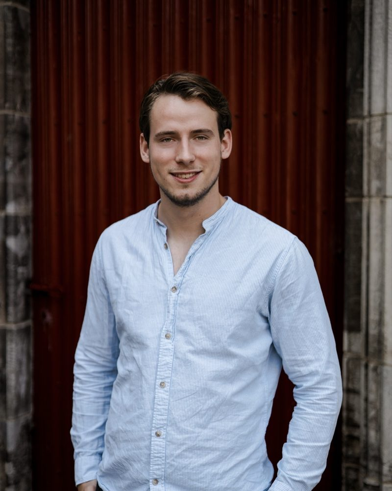

Olaf SchoutenKlaar voorVillarreal
Ruim zeven jaar maak ik content voor voetbalclub G.V.V.V. en sta ik als speaker langs het veld. Bij More2Win zette ik sportprojecten met maatschappelijke impact neer. Die ervaring wil ik in Spanje samen met internationale studenten in één pitch gieten.

Verhalen van clubs vertellen
Ik ben vierdejaars student Sportcommunicatie aan Fontys in Tilburg. Ik vertel de verhalen van sportorganisaties in woord en beeld, van content en video tot live presentatie voor publiek.
Wat mij drijft, is de rol die een club in haar stad kan spelen. Bij More2Win bereikte ik met negen clinics ruim 400 kinderen, met topsporters als rolmodel. Villarreal laat zien hoe sterk die band kan zijn: in het stadion past ongeveer de helft van de stad, en toch speelt de club voor het tweede seizoen op rij Champions League.
Liever zien dan lezen?
Deze vlog maakte ik in 2024 voor mijn opleiding. Hij is dus al wat ouder, maar laat goed zien hoe ik voor de camera sta.
Uit de peerreviews
“Door hem wist iedereen iedere week wat zijn of haar taak was en wat er nog moest gebeuren.”
“Gezien zijn verleden op het vlak van content maken voor de club G.V.V.V. is Olaf echt een creatieveling.”
“Hij verdeelt de taken goed en zorgt voor een onmisbare bijdrage aan de samenwerking binnen het groepje.”
Kies je route
Waarom ik
Mijn motivatie, wat ik meebreng en waar ik in groei.
Lees verder → 02 · WerkCases
Projecten met resultaat, van het EK BMX tot websites.
Bekijk cases → 03 · ErvaringSpeelminuten
Werk, opleiding en nevenactiviteiten op een rij.
Naar de tijdlijn → 04 · VillarrealMijn inzet
De club, mijn eerste invalshoek en wat ik wil toevoegen.
Naar Villarreal →